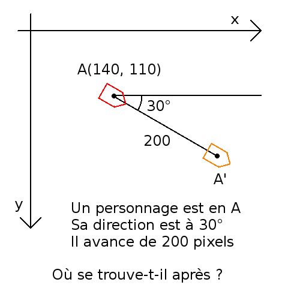
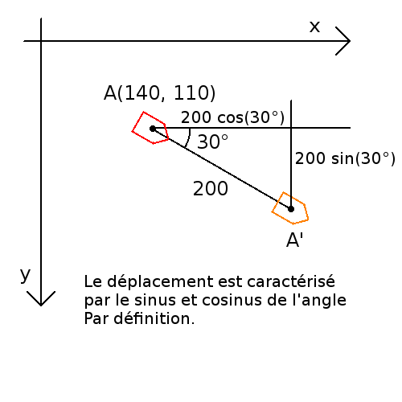
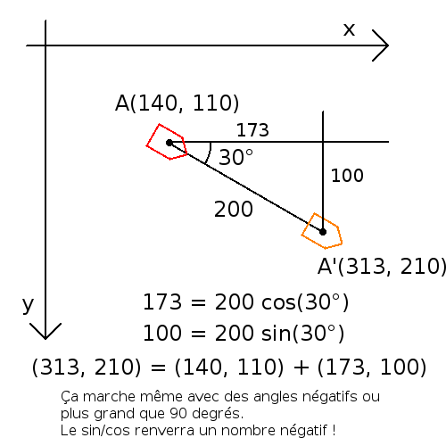
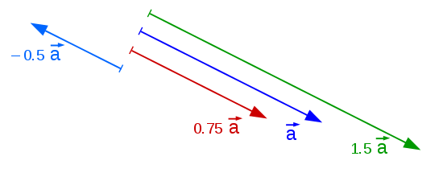
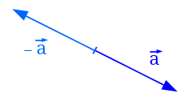

Mathématiques : Trigonométrie, vecteurs et matrices
Exercices de présentation
 English here!
English here!Voici quelques exercices de mathématiques très pratiques pour les jeux vidéos en 2D, la théorie se trouve dans les sections en dessous de la page, l'exercice 1 utilise le théorème de Pythagore, les exercices 2 et 3 utilisent la trigonométrie, l'exercice 4 utilise le concept de vecteur.
Exercice 2 : Avancer




Exercice 3 : Regarder
Exercice 4 : Vecteur unitaire
Pythagore
Quelle est la longueur de la diagonale d'un carré de côté 1cm ?
Si j'ai un triangle rectangle (un triangle où un de ses angles vaut 90 degrés) qui a un côté de longueur 5cm, et un autre de 2cm, quelle va être la longueur du dernier côté ?
Dessine sur une feuille ces deux exemples et mesure les longueurs demandées, savais-tu qu'il existe une formule qui résoud ces problèmes ?
Ces deux questions peuvent être répondues via le théorème de Pythagore, par exemple $\sqrt{2} \approx 1.41 \text{cm}$ est la réponse à la première question.
Rappelle-toi que la racine d'un nombre $x$ est le nombre qui multiplé par lui même donne $x$. Ainsi, $\sqrt{9} = 3$ car $3 \times 3 = 9$, ou en utilisant les exposants, $3^2 = 9$. La racine de 2 est un nombre avec une infinité de chiffres après la virgule ! On parle d'un nombre irrationnel. Plus d'infos sur les nombres rationnels et irrationnels sur internet.
$\sqrt{2} \approx 1.41$ est bien la racine de 2 car $\sqrt{2} \times \sqrt{2} = 2$, en effet, $1.41 \times 1.41 = 1.9880 \approx 2$.
Une calculette est capable de faire des racines, python peut le faire via print(math.sqrt(2)) après avoir écrit import math au début du code.
math est un module python, plus d'info sur les modules
ici.
Vous pouvez trouver des informations sur le théorème de Pythagore partout sur le web en tappant sur Google Théorème de Pythagore. Ou simplement en allant sur Wikipedia ou sur mathisfun.
Pour plus d'informations, regardez le théorème de Pythagore sur Clipedia.
N'hésitez pas à mettre la vidéo en plein écran, à arrêter ou revenir en arrière si vous le voulez, ou même de regarder la vidéo en accéléré en cliquant sur le bouton vitesse du lecteur. Cliquez sur vidéos liées en dessous de la vidéo pour voir les autres vidéos du sujet.
Trigonométrie
La trigonométrie permet de faire une correspondance entre les angles et les longueurs, grâce aux notions de base, on peut répondre à des questions telles que :
- En 2D, un personnage est sur le point A de coordonnées (x = 140, y = 100) mètres, il regarde à 30° et avance de 200 mètres, où est-il à présent ?
- Un triangle a un côté de longueur 1, un autre de longueur 2, séparé par un angle de 30°, de quelles longueurs sont les autres côtés et que valent les autres angles ?
- Quelle est la hauteur d'un triangle de côtés 1, 2 et 3 ? Que vaut son aire ?
- Comment couper parfaitement une pizza en 6 ?
Dans le langage courant, on dira plutot trigono
Le cosinus et le sinus
La base de la trigonométrie est la définition du sinus d'un angle et du cosinus d'un angle.
Un point P à une distance 1 de l'origine faisant un angle $\theta$ avec l'axe x (vers l'axe y) a une coordonnée $(x = \cos\theta,\ y = \sin\theta)$ :


Par définition, on a donc le cosinus d'un angle est la coordonée x du point à distance 1 positionné à cet angle par rapport à l'axe x et le sinus d'un angle est la coordonée y du point à distance 1 positionné à cet angle par rapport à l'axe x.
Sur mon dessin, l'angle est de 36° et le point a environ les coordonnées $(0.82, 0.55)$ (j'ai mesuré !), on a donc $\cos(36°) = 0.82$ et $\sin(36°) = 0.55$
Cliquez sur la figure précédente pour voir les valeurs numériques.
Par la définition, vous pouvez déja répondre à ces questions, est-ce qu'il existe un angle...
- ...dont le cosinus est plus grand que 1 ?
- ...dont le cosinus vaut zéro ?
- ...dont le sinus vaut 0.82 ? Quel est le rapport entre cet angle et 34 degrés ?
- ...dont le cosinus est négatif ? Réponse un peu plus bas !
Conventions d'axe Y
Attention, si l'axe y est vers le bas (comme souvent en informatique), l'angle tourne dans l'autre sens !
- Quand Y est vers le haut, le sens des aiguilles d'une montre représente des valeurs d'angle qui diminuent alors que le sens anti-horlogique représente des valeurs qui augmentent.
- Quand Y est vers le bas, le sens des aiguilles d'une montre représente des valeurs d'angle qui augmentent alors que le sens anti-horlogique représente des valeurs qui diminuent.


À cause des deux conventions d'axe Y, je préfère ne pas parler de sens trigonométrique, ou alors dire que le sens trigonométrique est le sens qui fait que cos(1°) et sin(1°) sont positifs.
Calculettes et ordinateurs
Avant, on n'avait pas de calculettes, alors on lisait des tables... Maintenant on en a et on a même des ordis ! Voici mon exemple, en Python :
from math import cos, sin, radians, degrees
print(cos(radians(36))) # 0.82
print(sin(radians(36))) # 0.55
Nous verrons plus tard pourquoi on doit écrire radians, dis-toi pour l'instant que c'est juste une autre unité d'angle plus mathématique et que donc il faut convertir les degrés en radians.
Le code précédent peut se simplifier en téléchargeant mon fichier vec3_utils :
from vec3_utils import cosd, sind
print(cosd(36)) # 0.82
print(sind(36)) # 0.55
Vous pouvez également regarder le fichier vec3_utils pour voir la définition de la fonction cosd et sind, rien de bien sorcier.
Sur une calculette, il y a un bouton pour changer le mode d'exécution de cos et sin.
Distance r
Maintenant, si le point est à une distance 2 et non 1, tout est 2 fois plus grand, ses coordonnées seront donc $(x = 2\cos\theta,\ y = 2\sin\theta)$. Plus généralement, si sa distance est $r$, sa coordonnée sera donc $(x = r\cos\theta,\ y = r\sin\theta)$.
Coordonnées négatives
Si l'angle est entre 90° et 270°, la coordonnée en x sera donc négative. De même, pour un angle entre 180° et 360°, la coordonnée en y sera négative. On voit donc que le sinus et le cosinus d'un angle peut être négatif !


Le cercle que vous apercevez sur le dessin est souvent appelé le cercle trigonométrique, il permet d'illustrer les concepts de base de la trigonométrie, cependant, vu que le cercle est de rayon 1, le cosinus et le sinus d'un angle sera toujours entre −1 et 1.
La relation des sinus et cosinus
En appliquant pythagore dans le triangle rectangle apparu sur l'image, on a :
$(\sin\theta)^2 + (\cos\theta)^2 = 1^2$ $\iff \sin^2\theta + \cos^2\theta = 1$
Et ça, quelque soit l'angle $\theta$, pas mal non ?
Angles petits et grands
Un angle peut être négatif, un angle de −45° correspond à un angle de 315°, en effet, tourner de 45° à gauche revient à tourner de 315° à droite, plus généralement, un angle de −x degrés correspond à un angle de 360−x degrés.
Un angle peut être plus grand que 360 degrés, en effet, tourner de 45° revient à tourner de 405° (45° plus un tour de 360°), plus généralement, un angle de x degrés correspond à un angle de 360+x degrés.
On peut faire plus qu'un tour, un angle de 45° revient à un angle de 45°+360°+360°+360°...
Le point correspondant à l'angle −45° aura donc la même coordonnée que celui de l'angle 315° et le point correspondant à l'angle 45° aura donc la même coordonnée que celui de l'angle 405°.
On a donc : $ \begin{cases} \cos(360° - \theta) = \cos(-\theta) \\ \sin(360° - \theta) = \sin(-\theta) \end{cases} $ et $ \begin{cases} \cos(\theta + 360°) = \cos \theta \\ \sin(\theta + 360°) = \sin \theta \end{cases} $
Tangente
On définit : $\tan\theta = \cfrac{\sin\theta}{\cos\theta}$ la tangente de l'angle $\theta$, notée $\tan\theta$ ou $\mathrm{tg}\ \theta$ en littérature française. La tangente est définie comme le rapport du sinus sur le cosinus.
La tangente peut aussi être vue comme une coordonnée sur le cercle trigonométrique :

La tangente vaut donc la coordonnée y de l'intersection de la droite $x = 1$ et de la droite $OP$.
Il y a aussi la cotangente définie comme $\cfrac{\cos\theta}{\sin\theta}$ $= \cfrac{1}{\tan\theta}$ ou comme l'intersection de la droite $y = 1$ et de la droite $OP$ mais elle est rarement utilisée.
{kind=link}
Quand l'angle est entre 90 et 180 degrés (deuxième quadrant), le sinus est positif et le cosinus est négatif, donc la tangente est négative. Sur le dessin, on voit que l'intersection entre les deux droites se retrouve en dessous de l'axe des x.
Quand l'angle est à 90°, le sinus vaut 1, le cosinus est nul, donc la tangente n'existe pas, ou vaut $\frac{1}{0} = +\infty$. Quand l'angle vaut −90°, le sinus vaut −1, le cosinus est nul, donc la tangente vaut $\frac{-1}{0} = -\infty$, la cotangente a les mêmes considérations pour les angles de 0 et 180 degrés.
Triangle rectangle
Depuis un cercle de rayon $r$ doté d'un angle $\theta$, on peut observer un triangle rectangle.


Dans un triangle rectangle, le côté opposé à l'angle droit est appelée l'hypothénuse (longueur h). Quand on parle d'un des deux angles, on parlera du côté adjacent (longeur a) et côté opposé (longeur o).
On peut en conclure que, dans tout triangle rectangle, les sinus, cosinus et tangentes des angles représentent des rapport, une division de deux longueurs :
$\begin{cases} r\ \sin\theta = o \\ h = r \\ \end{cases} \iff$ $\sin\theta = \cfrac{o}{h}$
$\begin{cases} r\ \cos\theta = a \\ h = r \\ \end{cases} \iff$ $\cos\theta = \cfrac{a}{h}$
$\tan\theta$ $= \cfrac{\sin\theta}{\cos\theta}$ $= \cfrac{\frac{o}{h}}{\frac{a}{h}}$ $= \cfrac{o}{a}$
- Le sinus d'un angle vaut la longueur du côté opposé à l'angle sur la longueur de l'hypothénuse : $\sin\theta = \frac{o}{h}$
- Le cosinus d'un angle vaut la longueur du côté adjacent à l'angle sur la longueur de l'hypothénuse : $\cos\theta = \frac{a}{h}$
- La tangente d'un angle vaut la longueur du côté opposé à l'angle sur la longueur du côté adjacent : $\tan\theta = \frac{o}{a}$
Un moyen mnémonique bien connu est SOHCAHTOA, le Sinus de l'angle vaut la longueur du côté Opposé sur la longueur de l'Hypothénuse, le Cosinus de l'angle vaut la longueur du côté Adjacent sur la longueur de l'Hypothénuse, la Tangente de l'angle vaut la longueur du côté Opposé sur la longueur du côté Adjacent.
Le radian
Le radian est une unité d'angle plus mathématique, on établit que 360 degrés sera $2\pi$ radians, car $2\pi$ c'est la circonférence du cercle de rayon 1.
À l'angle de 1 radian, on a la longueur de l'arc (en rouge) qui est égale au rayon du cercle (en bleu) :

Certains mathématiciens n'aiment pas $\pi$, et préfèrent utiliser $\tau = 2\pi$.
Donc, 360 degrés, c'est un tour complet, c'est $\tau$ radians ! Parler en $\tau$ radians, c'est comme parler en tours, ainsi $\frac{3}{4}\tau$ radians est l'angle qui fait $\frac{3}{4}$ de tour, donc $\frac{3}{4}360 = 270$ degrés.
Pour convertir du degré au radian :
$360\ \text{deg} = \tau\ \text{rad}$ $\iff x\ 360\ \text{deg} = x\ \tau\ \text{rad}$ $\iff x\ \text{deg} = x \frac{\tau}{360}\ \text{rad}$ $\iff x\ \text{deg} = (x \times \tau / 360)\ \text{rad}$ $= (x \times \pi / 180)\ \text{rad}$
Et du radian au degré :
$x\ \text{deg} = (x \times \tau / 360)\ \text{rad}$ $\iff x\ \text{rad} = (x \times 360 / \tau)\ \text{deg}$ $= (x \times 180 / \pi)\ \text{rad}$


Pour rappel, $\tau = 2\pi = 6.283185...$ donc $1\ \text{rad} \approx 57°$.
from math import tau
print(tau) # 6.2831... depuis Python 3.6
Python nous permet de convertir du degré au radian :
from math import radians, degrees
print(radians(360)) # 6.2831...
print(degrees(1)) # 57.29
Attention, les fonctions cos et sin attendent des radians !
from math import cos, sin
print(cos(radians(34))) # 0.82
Clipedia
Plus d'infos sur la trigonométrie et le radian sur clipedia !
N'hésitez pas à mettre la vidéo en plein écran, à arrêter ou revenir en arrière si vous le voulez, ou même de regarder la vidéo en accéléré en cliquant sur le bouton vitesse du lecteur. Cliquez sur vidéos liées en dessous de la vidéo pour voir les autres vidéos du sujet.
Un petit mot sur le cosinus
[Section en construction]Trouver l'angle, les fonctions d'Arc
[Section en construction]Vecteurs
Dans l'exercice 4, nous utilisons le concept de vecteur. En un mot, un vecteur c'est un déplacement. Les vecteurs permettent de faire certaines opérations de la même manière en 1D, 2D et 3D. Le concept de déplacement est en effet commun aux 3 dimensions.
Pour une autre explication plus détaillée sur les vecteurs, je conseille les 3 vidéos [1] [2] [3] sur le sujet sur Clipedia. N'hésitez pas à mettre la vidéo en plein écran, à arrêter ou revenir en arrière si vous le voulez, ou même de regarder la vidéo en accéléré en cliquant sur le bouton vitesse du lecteur. Cliquez sur vidéos liées en dessous de la vidéo pour voir les autres vidéos du sujet.
Ou la vidéo sur les vecteurs dans la playlist sur l'algèbre linéaire en anglais sous-titré français fait par la chaîne 3Blue1Brown.
Opérations de base
Imaginez que vous êtes sur un échiquier en case b1 et que vous vous déplacez en case c3, vous faites un déplacement de 1 case vers la droite et 2 cases vers le haut. Si on appelle votre vecteur de déplacement $\vec{d}$, on notera $\vec{d} = (1,\ 2)$. Les nombres 1 et 2 sont appelés les composantes du vecteur $\vec{d}$.
La flèche au dessus de la lettre d permet de rappeler que $\vec{d}$ est un vecteur. D'autres notations existent : sans la pointe de la flèche $\bar{d}$, en majuscule $D$, ou sur ordinateur, en gras $\mathbf{D}$.
Géométriquement, la flèche peut se déplacer, le déplacement de b1 vers c3 est le même que celui de g1 à h3.
Un déplacement peut avoir des composantes négatives, si je suis en b8 et que je vais en c6, $\vec{d} = (1,-2)$. Se déplacer de 2 cases vers le bas, c'est la même chose que de se déplacer de −2 cases vers le haut.
Il existe 3 opérations de base sur les vecteurs 2D : l'addition, la multiplication par un nombre et la norme.
Addition : $\vec{v} + \vec{w} = (v_x + w_x,\ v_y + w_y)$
Exemple: $(3,\ 5) + (-2,\ 1) = (1,\ 6)$.
Un déplacement de 3 cases vers la droite et 5 cases vers le haut + Un déplacement de −2 cases vers la droite et 1 case vers le haut = Un déplacement de 1 case vers la droite et 6 cases vers le haut.
Voici une représentation géométrique de l'addition vectorielle.
Multiplication par un nombre : $k \cdot \vec{v} = (k \cdot v_x,\ k \cdot v_y)$
Exemple: $2 \cdot (-4,\ 3) = (-8,\ 6)$
2 fois Un déplacement de −4 cases vers la droite et 3 cases vers le haut = Un déplacement de −8 cases vers la droite et 6 cases vers le haut.
Voici une représentation géométrique de la multiplication par un nombre.

Norme (ou longueur, taille) : $\|\vec{v}\| = \sqrt{v_x^2 + v_y^2}$
$\|(6,3)\| = \sqrt{6^2 + 3^2}$ $= \sqrt{45}$ $\simeq 6.70 $
La norme est calculée avec pythagore. Voici une représentation gravarphique du calcul de la norme de $\vec{a} = (6, 3)$
Remarquez que cela marche également avec des composantes négatives !
$\|(-6,3)\| = \sqrt{(-6)^2 + 3^2}$ $= \sqrt{6^2 + 3^2}$ $= \sqrt{45}$ $\simeq 6.70 $
Deux vecteurs particuliers forment la base pour tous les vecteurs, c'est $\vec{e}_x = (1,0)$ et $\vec{e}_y = (0,1)$. Ainsi tout vecteur $\vec{v} = (a,b)$ peut s'écrire $\vec{v} = a \cdot \vec{e}_x + b \cdot \vec{e}_y$.
D'autres notations existent pour les vecteurs de base, on retrouve $\vec{e}_1$, $\vec{e}_2$ ou encore $\vec{i}$, $\vec{j}$ ou $\mathbf{i}$, $\mathbf{j}$ ou vu qu'ils sont de norme 1, $\vec{1}_x$, $\vec{1}_y$ ou $\mathbf{\hat{i}}$, $\mathbf{\hat{j}}$ ou sans le point $\hat{\imath}$, $\hat{\jmath}$, ils sont fous ces humains.
$\vec{a} = (6,\ 3) $ $= 6\, \vec{e}_x + 3\, \vec{e}_y $ $= 6\, \vec{e}_1 + 3\, \vec{e}_2$
$\mathbf{a} = (6,\ 3) $ $= 6 \mathbf{i} + 3 \mathbf{j} $ $= 6 \mathbf{\hat{i}} + 3 \mathbf{\hat{j}}$ $= 6 \hat{\imath} + 3 \hat{\jmath}$
Opérations déduites
Depuis ces formules de base, nous déduisons :
Vecteur opposé : $- \vec{v} = (-1) \cdot \vec{v} = (-v_x,\ -v_y)$

On dit que ce vecteur a la même direction, mais un sens opposé.
La somme de ces deux vecteurs donne bien le vecteur nul : $\vec{v} + (-\vec{v}) = \vec{0} = (0,0)$
Soustraction : $\vec{v} - \vec{w} = \vec{v} + (- \vec{w}) = (v_x - w_x,\ v_y - w_y)$
Le meilleur moyen de voir la soustraction est de poser la question quel est le déplacement $\vec{d}$ qui va du point $\vec{a}$ au point $\vec{b}$ ? $\vec{d} = \vec{b} - \vec{a}$
On notera $\vec{AB}$ le vecteur qui va du point A au point B. On a $\vec{AB} = \vec{b} - \vec{a}$
Quand on a trois points $A$, $B$, $C$, on a naturellement : $\vec{AB} + \vec{BC} = \vec{AC}$ (relation de Chasles)
Et si on inverse les deux points, on obtient le vecteur opposé : $\vec{BA} = - \vec{AB}$
Division par un nombre : $\vec{v} / k = (1/k) \cdot \vec{v}$
Vecteur normalisé (de taille 1) : $\vec{1}_v = \vec{v} / \|\vec{v}\|$
Si je multiple un vecteur par 2, sa norme (taille) est également multipliée par 2. De même, si un vecteur de longueur 5 est divisé par 5, il devient de longueur 1. Le vecteur normalisé $\vec{1}_v$ est donc le vecteur dans la même direction et sens que $\vec{v}$, mais de longueur $1$. Un exemple ici :
Si $\vec{d} = (4,3)$ alors $\vec{1}_d$ $= \vec{d}/\|\vec{d}\|$ $= (4,\ 3)/5$ $= (0.80,\ 0.60)$
$\vec{d} = (4,3)$ $\implies \vec{1}_d$ $= \vec{d}/\|\vec{d}\|$ $= (4,\ 3)/5$ $= (0.80,\ 0.60)$
Un avantage pratique d'un vecteur normalisé, est que si je le multiple par 5, il sera de taille 5 !
Dans la littérature anglaise on retrouve la notation $\hat{v}$ ou $\mathbf{\hat{v}}$ pour $\vec{1}_v$, l'accent circonflexe signifiant que la norme vaut 1.
Exemple
Je vais du point $A(6,3)$ (mètres) au point $B(4,7)$ (mètres), j'ai parcouru une distance de $4.47m$.
Pour ce déplacement, je peux dire :
- Je me suis déplacé de −2 mètres en x et +4 mètres en y
- Je me suis déplacé de 4.47m à 116.5°
Une direction peut être représentée par un angle ($\theta$) ou un vecteur unitaire, un vecteur unitaire a une norme = $1$. L'utilité d'un tel vecteur est que si on le multiplie par un nombre positif $n$, le vecteur final aura la norme $n$.
-
On peut représenter le déplacement via ses composantes x,y :
$\vec{d} = \vec{AB}$ $= \vec{b} - \vec{a}$ $= (4,\ 7) - (6,\ 3)$ $= (-2,\ 4)$
-
Ou avec la direction et la norme :
Vecteur unitaire depuis l'angle
$\vec{1}_d = (\cos\theta,\ \sin\theta) $$= (\cos 116.5°,\ \sin 116.5°)$ $= (-0.44,\ 0.89)$
Vecteur unitaire depuis un vecteur
$\vec{1}_d $$= \vec{d} / \|\vec{d}\| = (-2,\ 4) / 4.47$ $= (-0.44,\ 0.89)$
Vecteur depuis un vecteur unitaire et une longueur
$\vec{d} $$= \|\vec{d}\| \cdot \vec{1}_d$ $= 4.47 \cdot (-0.44,\ 0.89)$ $= (-2,\ 4)$
Une dernière petite notation souvent rencontrée, quand on a un vecteur $\vec{a}$, on note souvent $a$ (sans flèche) pour la norme signée. $a$ peut donc être négatif (dans ce cas le vecteur est renversé).
Ou encore, on dira que $a$ est la projection de $\vec{a}$ sur la droite dirigée définie par le vecteur $\vec{a}$.
Voilà, j'espère que tu as mieux compris l'exercice 4 et que tu n'as pas peur d'utiliser les vecteurs en physique ou dans des opérations plus complexes dans la section suivante !
Résumé
- Un vecteur $\vec{v} = (v_x,v_y)$, c'est un déplacement, avec ses composantes $v_x,v_y$.
- $\vec{v} + \vec{w} = (v_x + w_x,\ v_y + w_y)$
- $k \cdot \vec{v} = (k \cdot v_x,\ k \cdot v_y)$
- $\|\vec{v}\| = \sqrt{v_x^2 + v_y^2}$
- $- \vec{v} = (-1) \cdot \vec{v}$ $= (-v_x,\ -v_y)$
- $\vec{v} - \vec{w} = \vec{v} + (- \vec{w})$ $= (v_x - w_x,\ v_y - w_y)$
- $\vec{1}_v = \vec{v} / \|\vec{v}\|$
- $\|\vec{1}_v\| = 1$
- $\vec{1}_v = (\cos\theta,\ \sin\theta)$
- $\|k \vec{1}_v\| = |k|$
Opérations vectorielles
Voici une vue d'ensemble d'autres opérations vectorielles utiles dans d'autres contextes.
Équation de droite
Une droite (2D ou 3D !) est représentée avec un point $\vec{p}$ et un déplacement $\vec{d}$. On a : $\vec{r}(t) = \vec{p} + t \cdot \vec{d}$ où $t$ est un nombre réel.
Le déplacement $\vec{d}$ est appelé un vecteur directeur de la droite, si l'on connaît deux points de la droite $\vec{p}_0$ et $\vec{p}_1$, il est facile de calculer un vecteur directeur $\vec{d} = \vec{p}_1 - \vec{p}_0$.
Pour toute valeur de $t$, on obtient un point. Par exemple, la droite passant par $\vec{p} = (1,2)$ de vecteur directeur $\vec{d} = (2,-3)$ contient ces 5 points :
| $\vec{r}(0) $ | $= (1,2) + 0 \cdot (2,-3) $ | $= (1,2)$ |
| $\vec{r}(0.5) $ | $= (1,2) + 0.5 \cdot (2,-3) $ | $= (1.5,-0.5)$ |
| $\vec{r}(1) $ | $= (1,2) + 1 \cdot (2,-3) $ | $= (3,-1)$ |
| $\vec{r}(2) $ | $= (1,2) + 2 \cdot (2,-3) $ | $= (5,-4)$ |
| $\vec{r}(-1) $ | $= (1,2) + (-1) \cdot (2,-3) $ | $= (-1,5)$ |
Si $t$ est négatif, le point de l'autre côté du vecteur $\vec{d}$, comme par exemple le point $\vec{r}(-1)$ sur la figure précédente.
Si $\vec{d}$ est normé, le vecteur $\vec{r}(t)$ sera toujours à distance $|t|$ de $\vec{p}$, on peut donc facile résoudre le problème suivant : quels sont les deux points de la droite à distance $k$ de $\vec{p}$ ? Il s'agit de $\vec{p} \pm k\ \vec{1}_d$
Pour représenter un segment, il suffit de prendre $t \in [0,1]$
Plus d'infos sur Clipédia.
Produit scalaire
Une opération pratique est le produit scalaire noté $\vec{a} \cdot \vec{b}$ ou parfois $\langle \vec{a}, \vec{b} \rangle$, c'est une opération qui prend deux vecteurs et renvoie un nombre (un scalaire).
Une des propriétés de ce produit est que deux vecteurs perpendiculaires ont un produit scalaire nul.
Le produit scalaire a une formule géométrique et algébrique équivalentes :
$\begin{cases} \vec{a} \cdot \vec{b} =\|\vec{a}\|\ \|\vec{b}\|\ \cos \theta \\ \vec{a} \cdot \vec{b} = a_x b_x + a_y b_y \end{cases}$
Comme cas particuliers, on a :
- Si $\theta = 90° $ alors $\cos\theta = 0 $$\implies \vec{a} \perp \vec{b} $$\implies \vec{a} \cdot \vec{b} = 0$
- Si $\theta = 0° $ alors $\cos\theta = 1$$\implies \vec{a} \parallel \vec{b} $$\implies \vec{a} \cdot \vec{b} = \|\vec{a}\|\ \|\vec{b}\|$
- Si $\theta = 180° $ alors $\cos\theta = -1$$\implies \vec{a} \parallel \vec{b} $$\implies \vec{a} \cdot \vec{b} = - \|\vec{a}\|\ \|\vec{b}\|$
- Si $\vec{a} \parallel \vec{b} $ alors $\vec{a} \cdot \vec{b} = a \cdot b$
- $\theta = 90° $$\implies \cos\theta = 0 $$\implies \vec{a} \perp \vec{b} $$\implies \vec{a} \cdot \vec{b} = 0$
- $\theta = 0° $$\implies \cos\theta = 1$$\implies \vec{a} \parallel \vec{b} $$\implies \vec{a} \cdot \vec{b} = \|\vec{a}\|\ \|\vec{b}\|$
- $\theta = 180° $$\implies \cos\theta = -1$$\implies \vec{a} \parallel \vec{b} $$\implies \vec{a} \cdot \vec{b} = - \|\vec{a}\|\ \|\vec{b}\|$
- $\vec{a} \parallel \vec{b} $$\implies \vec{a} \cdot \vec{b} = a \cdot b$
En terme moins mathématique, le produit scalaire nous dit combien ces vecteurs pointent dans le même sens, s'il nous répond $+1$, c'est qu'ils sont parfaitement alignés, $0$ correspond au cas perpendiculaire (pas du tout alignés), une valeur comme $0.7$ voudra dire entre les deux. Et finalement $-1$ veut dire aligné mais dans un sens différent.
Petite note de rigueur mathématique sur le paragraphe précédent, les valeurs de $1$ et $-1$ sont valables seulement si les vecteurs sont normés.
On peut voir facilement le produit scalaire comme une projection, quand je projette $\vec{a}$ sur $\vec{b}$, j'obtiens une longueur $a_b$ et par la définition du cosinus, $a_b = \|\vec{a}\| \cos\theta$, le produit scalaire peut donc aussi s'écrire :
$\vec{a} \cdot \vec{b} = a_b\ \|\vec{b}\| = b_a \|\vec{a}\|$

Quand un des vecteurs est normé, la norme vaut $1$ et donc le produit scalaire vaut cette projection :
$\vec{a} \cdot \vec{1}_b = a_b$
Et quand les deux vecteurs sont normés, le produit scalaire vaut le cosinus :
$\vec{1}_a \cdot \vec{1}_b = \cos\theta$
Le produit scalaire peut également être négatif, pour la définition géométrique, c'est parce que $\cos\theta < 0$ et pour la définition par la projection c'est parce que $a_b < 0$ :
Le nom de produit vient de la distributivité : $\vec{a} \cdot (\vec{b} + \vec{c}) = \vec{a} \cdot \vec{b} + \vec{a} \cdot \vec{c}$ et de l'homogénéité : $k (\vec{a} \cdot \vec{b}) = (k \vec{a}) \cdot \vec{b}$. Ces deux priorités en font par définition une transformation linéaire.
Avec les cas particuliers et la linéarité, on retrouve la formule algébrique : (clique sur le bouton pour voir le développement avec plus de détails !)
$\vec{a} \cdot \vec{b} $ $= (\color{red}{a_x \vec{1}_x} + \color{green}{a_y \vec{1}_y}) \cdot (\color{red}{b_x \vec{1}_x} + \color{green}{b_y \vec{1}_y}) $ $= \color{red}{a_x b_x} (\underbrace{\color{red}{\vec{1}_x} \cdot \color{red}{\vec{1}_x}}_{1}) $ $+ \color{red}{a_x} \color{green}{b_y} (\underbrace{\color{red}{\vec{1}_x} \cdot \color{green}{\vec{1}_y}}_{0}) $ $+ \color{green}{a_y} \color{red}{b_x} (\underbrace{\color{green}{\vec{1}_y} \cdot \color{red}{\vec{1}_x}}_{0}) $ $+ \color{green}{a_y b_y} (\underbrace{\color{green}{\vec{1}_y} \cdot \color{green}{\vec{1}_y}}_{1})$ $= \color{red}{a_x b_x} + \color{green}{a_y b_y}$
En python avec numpy, il existe la fonction numpy.dot :
from numpy import dot
dot([1,2],[3,4]) # 1*3+2*4
Cette opération a une interprétation physique très importante qui est la notion de travail.
Voici une vidéo montrant le rapport entre produit scalaire et travail.
Le travail et l'énergie sont des notions importantes en physique, plus d'infos sur clipedia dans la série des 4 vidéos sur l'énergie. Cependant, dans la vidéo, on était en une dimension, on avait la force $F$ et le déplacement $x$, et donc $W = F \cdot x$. En plusieurs dimensions, ce sont tous les deux des vecteurs, et on a donc le travail qui vaut $W = \vec{F} \cdot \vec{x}$, qui est un produit scalaire ! La page de physique parle avec plus de détails des forces comme vecteurs.
En anglais, le produit scalaire s'appelle scalar product ou dot product (dot voulant dire point comme dans la notation $\vec{a} \cdot \vec{b}$). Une explication du dot product en anglais est donnée sur betterexplained.
Norme 3D
Pour la 3D, les opérations de bases restent les mêmes, ce qui fait que la majorité des équations vectorielles sont aussi valides en 3D.
La norme s'étend naturellement avec pythagore en 3D : $\|\vec{v}\| = \sqrt{v_x^2 + v_y^2 + v_z^2}$
Petite remarque sur la représentation des vecteurs 3D dans le plan, on peut faire un dessin en perspective comme sur la figure précédente. Mais on peut aussi considérer un plan, comment dessiner le vecteur $\vec{1}_z = (0,0,1)$ dans le plan XY ?

Comme vous voyez sur le dessin, on représente un vecteur sortant de l'écran par un symbole $\odot$ alors qu'un vecteur rentrant dans l'écran utilise le symbole $\otimes$.
Coordonnées sphériques
Pour représenter une direction, le vecteur unitaire devient encore plus pratique. On peut également représenter une direction avec 2 angles et les coordonnées sphériques.
L'angle $\theta$ est appelée angle azimutal ou longitude et varie dans l'intervalle $[\small{0°},\small{360°}[$ ou $]-\small{180°}, +\small{180°}]$.
L'angle $\varphi$ est appelée angle zénithal ou colatitude et varie dans l'intervalle $[\small{0°},\small{180°}[$.
Attention : souvent en physique, $\theta$ est appelé $\varphi$ et $\varphi$ est appelé $\theta$ !
La relation inverse s'obtient via $\theta = \mathrm{atan2}(y, x)$ et $\varphi = \mathrm{acos}(z/r)$.
Produit vectoriel
Surtout utile en 3D, nous avons le produit vectoriel noté $\vec{a} \times \vec{b}$ ou $\vec{a} \wedge \vec{b}$.
C'est une opération 3D prenant deux vecteurs et renvoyant un troisième vecteur qui sera perpendiculaire aux deux vecteurs d'entrée.
Si les deux vecteurs sont parallèles, le résultat sera le vecteur nul, dans ce cas les deux vecteurs représentent la même direction ou la direction opposée.
Voici une définition du produit vectoriel :
$\vec{a} \times \vec{b}$ $= (\color{green}{a_y} \color{blue}{b_z} - \color{blue}{a_z} \color{green}{b_y} ,\ \color{blue}{a_z} \color{red}{b_x} - \color{red}{a_x} \color{blue}{b_z} ,\ \color{red}{a_x} \color{green}{b_y} - \color{green}{a_y} \color{red}{b_x})$
Un exemple: $(1,\ 2,\ 3) \times (-1,\ 1,\ 2)$ $= (1,\ -5,\ 3)$. Tu peux vérifier que $(1,\ -5,\ 3)$ est bien perpendiculaire à $(1,\ 2,\ 3)$ et $(-1,\ 1,\ 2)$ et donc normal au plan formé par $(1,\ 2,\ 3)$ et $(-1,\ 1,\ 2)$.
Si vous connaissez les déterminants, voici un moyen facile de se rappeler de la formule :
$\vec{a} \times \vec{b}$ $= \begin{vmatrix} \vec{1}_x&\vec{1}_y&\vec{1}_z\\ \color{red}{a_x}&\color{green}{a_y}&\color{blue}{a_z}\\ \color{red}{b_x}&\color{green}{b_y}&\color{blue}{b_z} \end{vmatrix}$ $= \vec{1}_x \begin{vmatrix}\color{green}{a_y}&\color{blue}{a_z}\\\color{green}{b_y}&\color{blue}{b_z}\end{vmatrix}$ $- \vec{1}_y \begin{vmatrix}\color{red}{a_x}&\color{blue}{a_z}\\\color{red}{b_x}&\color{blue}{b_z}\end{vmatrix}$ $+ \vec{1}_z \begin{vmatrix}\color{red}{a_x}&\color{green}{a_y}\\\color{red}{b_x}&\color{green}{b_y}\end{vmatrix}$ $= \vec{1}_x (\color{green}{a_y} \color{blue}{b_z} - \color{blue}{a_z} \color{green}{b_y})$ $- \vec{1}_y (\color{red}{a_x} \color{blue}{b_z} - \color{blue}{a_z} \color{red}{b_x})$ $+ \vec{1}_z (\color{red}{a_x} \color{green}{b_y} - \color{green}{a_y} \color{red}{b_x})$ $= (\color{green}{a_y} \color{blue}{b_z} - \color{blue}{a_z} \color{green}{b_y} ,\ -(\color{red}{a_x} \color{blue}{b_z - \color{blue}{a_z} \color{red}{b_x}}) ,\ \color{red}{a_x} \color{green}{b_y} - \color{green}{a_y} \color{red}{b_x})$ $= (\color{green}{a_y} \color{blue}{b_z} - \color{blue}{a_z} \color{green}{b_y} ,\ \color{blue}{a_z} \color{red}{b_x} - \color{red}{a_x} \color{blue}{b_z} ,\ \color{red}{a_x} \color{green}{b_y} - \color{green}{a_y} \color{red}{b_x})$
Si $\vec{c} = \vec{a} \times \vec{b}$ alors $c = a\ b\ \sin \theta$.
Si $\vec{c} = \vec{a} \times \vec{b} \implies c = a\ b\ \sin \theta$.
Dans notre exemple $(1,\ 2,\ 3) \times (-1,\ 1,\ 2)$ = $(1,\ -5,\ 3)$. Tu peux vérifier que la norme du vecteur résultant est bien de $a\ b\ \sin \theta$. L'angle est mesurable avec une équerre ou via le produit scalaire.
Un moyen mnémotechnique pour se rappeler du sens de $\vec{c}$ est la règle de la main droite. Vous pouvez essayer sur la figure suivante : sur votre main droite, $\vec{a}$ est votre pouce, $\vec{b}$ votre index, et $\vec{a} \times \vec{b}$ votre majeur.


Attention, si $\theta > \small{180°}$ alors $\sin \theta < 0$ et donc $\theta > \small{180°} \implies \sin \theta < 0$ $\implies$ le vecteur est opposé à la règle de la main droite.
Une autre règle de la main droite est expliquée en deux minutes dans cette vidéo (à la minute 21:40). La discussion pour $\theta > \small{180°}$ est à la minute 25:30.
Comme vu sur l'image animée précédente, si $\vec{a} \parallel \vec{b}$ alors $\sin\theta = 0$ et donc $\vec{a} \times \vec{b} = \vec{0}$. $\vec{a} \parallel \vec{b}\implies \sin\theta = 0$ $\implies \vec{a} \times \vec{b} = \vec{0}$. De même, si $\vec{a} \perp \vec{b}$ alors $\sin\theta = \pm 1$ $\vec{a} \perp \vec{b}$ $\implies \sin\theta = \pm 1$ $\implies \|\vec{a} \times \vec{b}\| = \pm\ \|\vec{a}\|\ \|\vec{b}\|$ (utilisez la règle de la main droite pour se souvenir du sens).
Si les deux vecteurs d'entrée sont de norme 1 et perpendiculaires, le vecteur résultant sera aussi de norme 1. En particulier, on a (pour un repère dextrogyre) :
$\begin{cases} \color{red}{\vec{1}_x} \times \color{green}{\vec{1}_y} = \color{blue}{\vec{1}_z} \\ \color{green}{\vec{1}_y} \times \color{blue}{\vec{1}_z} = \color{red}{\vec{1}_x} \\ \color{blue}{\vec{1}_z} \times \color{red}{\vec{1}_x} = \color{green}{\vec{1}_y} \\ \end{cases} \quad$ $\begin{cases} \color{green}{\vec{1}_y} \times \color{red}{\vec{1}_x} = - \color{blue}{\vec{1}_z} \\ \color{blue}{\vec{1}_z} \times \color{green}{\vec{1}_y} = - \color{red}{\vec{1}_x} \\ \color{red}{\vec{1}_x} \times \color{blue}{\vec{1}_z} = - \color{green}{\vec{1}_y} \\ \end{cases}$
Un moyen mnémotechnique pour se rappeler de ceci est que, si les deux vecteurs sont dans l'ordre (dans la séquence x y z x y z) alors c'est +, sinon c'est −.
Le nom de produit vient de la distributivité : $\vec{a} \times (\vec{b} + \vec{c}) = \vec{a} \times \vec{b} + \vec{a} \times \vec{c}$ et de l'homogénéité : $k (\vec{a} \times \vec{b}) = (k \vec{a}) \times \vec{b}$.
Attention, le produit vectoriel est anti-commutatif : $\vec{b} \times \vec{a} = \color{red}{\mathbf{-}}\ \vec{a} \times \vec{b}$.
Avec les cas particuliers et la linéarité, on retrouve la formule : (clique sur le bouton pour voir le développement avec plus de détails !)
$\vec{a} \times \vec{b}$ $= (\color{red}{a_x} \color{red}{\vec{1}_x} + \color{green}{a_y}\ \color{green}{\vec{1}_y} + \color{blue}{a_z}\ \color{blue}{\vec{1}_z}) $$\times (\color{red}{b_x} \color{red}{\vec{1}_x} + \color{green}{b_y}\ \color{green}{\vec{1}_y} + \color{blue}{b_z}\ \color{blue}{\vec{1}_z})$
$= \color{red}{a_x} \color{red}{b_x} (\underbrace{\color{red}{\vec{1}_x} \times \color{red}{\vec{1}_x}}_{\vec{0}})$ $+ \color{red}{a_x} \color{green}{b_y} (\underbrace{\color{red}{\vec{1}_x} \times \color{green}{\vec{1}_y}}_{\color{blue}{\vec{1}_z}})$ $+ \color{red}{a_x} \color{blue}{b_z} (\underbrace{\color{red}{\vec{1}_x} \times \color{blue}{\vec{1}_z}}_{-\color{green}{\vec{1}_y}})$
$+ \color{green}{a_y} \color{red}{b_x} (\underbrace{\color{green}{\vec{1}_y} \times \color{red}{\vec{1}_x}}_{-\color{blue}{\vec{1}_z}})$ $+ \color{green}{a_y} \color{green}{b_y} (\underbrace{\color{green}{\vec{1}_y} \times \color{green}{\vec{1}_y}}_{\vec{0}})$ $+ \color{green}{a_y} \color{blue}{b_z} (\underbrace{\color{green}{\vec{1}_y} \times \color{blue}{\vec{1}_z}}_{\color{red}{\vec{1}_x}})$
$+ \color{blue}{a_z} \color{red}{b_x} (\underbrace{\color{blue}{\vec{1}_z} \times \color{red}{\vec{1}_x}}_{\color{green}{\vec{1}_y}})$ $+ \color{blue}{a_z} \color{green}{b_y} (\underbrace{\color{blue}{\vec{1}_z} \times \color{green}{\vec{1}_y}}_{-\color{red}{\vec{1}_x}})$ $+ \color{blue}{a_z} \color{blue}{b_z} (\underbrace{\color{blue}{\vec{1}_z} \times \color{blue}{\vec{1}_z}}_{\vec{0}})$
$= \color{red}{a_x} \color{green}{b_y} \color{blue}{\vec{1}_z}$ $- \color{red}{a_x} \color{blue}{b_z} \color{green}{\vec{1}_y}$ $\quad- \color{green}{a_y} \color{red}{b_x} \color{blue}{\vec{1}_z}$ $+ \color{green}{a_y} \color{blue}{b_z} \color{red}{\vec{1}_x}$ $\quad+ \color{blue}{a_z} \color{red}{b_x} \color{green}{\vec{1}_y}$ $- \color{blue}{a_z} \color{green}{b_y} \color{red}{\vec{1}_x}$
$= (\color{green}{a_y} \color{blue}{b_z} - \color{blue}{a_z} \color{green}{b_y})\color{red}{\vec{1}_x} $$+ (\ \color{blue}{a_z} \color{red}{b_x} - \color{red}{a_x} \color{blue}{b_z}) \color{green}{\vec{1}_y} $$+ (\ \color{red}{a_x} \color{green}{b_y} - \color{green}{a_y} \color{red}{b_x}) \color{blue}{\vec{1}_z}$
En python avec numpy, il existe la fonction numpy.cross :
numpy.cross([1,0,0],[0,1,0]) # array([0,0,1]) Si tu veux d'autres infos, voici les vidéos traintant du produit vectoriel sur Clipedia : [1] [2] [3]
En physique une interprétation importante du produit vectoriel est le moment de force. Plus d'infos sur Clipédia.
Équation de plan
Un plan est souvent représenté à l'aide d'un point $\vec{p}$ et une direction normale $\vec{n}$. Parfois ce vecteur est normé ($\vec{1}_n$), parfois non.
Remarque qu'un plan a une infinité de vecteur normal. Si $\vec{n}$ est normal (perpendiculaire) au plan, les vecteurs $2\vec{n}, -\vec{n}, -5\vec{n}$ le seront aussi ($k\ \vec{n}\quad \forall k \in \mathbb{R}_{\ne 0}$).
La distance d'un point $\vec{r}$ par rapport à un plan est alors facilement exprimable avec un produit scalaire $(\vec{r} - \vec{p}) \cdot \vec{1}_n$.
Attention, il faut prendre la valeur absolue de ce produit scalaire pour obtenir la distance, une valeur négative représente une distance de l'autre côté du vecteur $\vec{n}$.
On peut facilement définir l'équation du plan en exprimant le fait que tous les points sont à une distance 0 :
$(\vec{r} - \vec{p}) \cdot \vec{1}_n = 0$ $\iff ((\vec{r} - \vec{p}) \cdot \vec{1}_n)\ \|\vec{n}\| = 0 \|\vec{n}\|$ $\iff (\vec{r} - \vec{p}) \cdot (\vec{1}_n\ \|\vec{n}\|) = 0$ $\iff (\vec{r} - \vec{p}) \cdot \vec{n} = 0$ $\iff \vec{r} \cdot \vec{n} - \vec{p} \cdot \vec{n} = 0$ $\iff \underbrace{\vec{r}}_{(x,y,z)} \cdot \underbrace{\vec{n}}_{(a,b,c)} = \underbrace{\vec{p} \cdot \vec{n}}_{d}$ $\iff ax + by + cz = d$
Équation de droite 2D
En 2D, ce concept de vecteur normal peut être appliqué à la droite. Et donc, en 2D, une droite passant par le point $\vec{p}$, de vecteur normal $\vec{n}$ aura l'équation :
$(\vec{r} - \vec{p}) \cdot \vec{1}_n = 0$ $\iff ((\vec{r} - \vec{p}) \cdot \vec{1}_n)\ \|\vec{n}\| = 0 \|\vec{n}\|$ $\iff (\vec{r} - \vec{p}) \cdot (\vec{1}_n\ \|\vec{n}\|) = 0$ $\iff (\vec{r} - \vec{p}) \cdot \vec{n} = 0$ $\iff \vec{r} \cdot \vec{n} - \vec{p} \cdot \vec{n} = 0$ $\iff \underbrace{\vec{r}}_{(x,y)} \cdot \underbrace{\vec{n}}_{(a,b)} = \underbrace{\vec{p} \cdot \vec{n}}_{c}$ $\iff ax + by = c$
La distance point droite se calculera facilement avec le produit scalaire $(\vec{r} - \vec{p}) \cdot \vec{1}_n$ où $\vec{p}$ est un point de la droite et $\vec{r}$ est le point pour lequel on veut calculer la distance.
Nous connaissons également l'équation vectorielle de la droite en 2D : $\vec{r}(t) = \vec{p} + t \cdot \vec{d}$
Le vecteur directeur et le vecteur normal sont bien sûr perpendiculaires. Pour avoir un vecteur normal quand on a un vecteur directeur, il suffit de faire tourner le vecteur de 90°.
La formule pour faire tourner un vecteur $(x,y)$ de 90° est très simple à retenir : $R_{90°}(x,y) = (-y,x)$Et donc, on a $(n_x, n_y) = (-d_y, d_x)$
En développant les deux équations (vectorielles et carthésiennes), on obtient une équivalence :
$\vec{r}(t) = \vec{p} + t \cdot \vec{d}$ $\iff \cases{ r_x = p_x + t \cdot d_x\\ r_y = p_y + t \cdot d_y }$ $\iff \cases{ t = (r_x - p_x) / d_x \quad (1)\\ r_y = p_y + ((r_x - p_x) / d_x) \cdot d_y\quad (2) }$ $(2) \iff d_x\ r_y = p_y\ d_x + d_y\ (r_x - p_x) $ $\iff d_x\ r_y = d_x\ p_y + d_y\ r_x - d_y\ p_x$ $\iff -d_y\ r_x + d_x\ r_y = - d_y\ p_x + d_x\ p_y $ $\iff n_x\ r_x + n_y\ r_y = n_x\ p_x + n_y\ p_y$ $\iff \vec{n} \cdot \vec{r} = \vec{n} \cdot \vec{p}$ $\iff \vec{r} \cdot \vec{n} = \vec{p} \cdot \vec{n}$
Intersections 3D
Trouver l'intersection $\vec{r}$ entre un plan contenant le point $\vec{p}$, dont la normale est $\vec{n}$ et une droite contenant $\vec{a}$ de vecteur directeur $\vec{d}$ :
$\cases{\vec{r} = \vec{a} + t\ \vec{d}\\(\vec{r} - \vec{p}) \cdot \vec{n} = 0}$ $\iff (\vec{a} + t\ \vec{d} - \vec{p}) \cdot \vec{n} = 0$ $\iff ((\vec{a} - \vec{p}) + t\ \vec{d}) \cdot \vec{n} = 0$ $\iff (\vec{a} - \vec{p}) \cdot \vec{n} + t\ (\vec{d} \cdot \vec{n}) = 0$ $\iff t\ (\vec{d} \cdot \vec{n}) = -(\vec{a} - \vec{p}) \cdot \vec{n}$ $\iff t = \cfrac{(\vec{p} - \vec{a}) \cdot \vec{n}}{\vec{d} \cdot \vec{n}}$
Physique
Beaucoup d'objets physiques sont représentés par des vecteurs comme les forces, la position, la vitesse et l'accélération, jette un œil à ma page physique !
Matrices
Motivation
Nous allons voir les matrices, un élément mathématique simple pour traiter des choses linéaires. Comme par exemple les transformations en 3D. Un vaisseau en 3D par exemple peut être transformé : on peut le redimensionner, le tourner, le déplacer.
Ce chapitre et le suivant pourront répondre à des questions comme celles-ci :
J'ai un point $(2,1)$, je le tourne de $45°$, où est-il maintenant ?
Nous verrons qu'il existe une matrice qui permet de nous donner la solution. On pourra demander à la matrice de nous calculer le nouveau point.
J'ai un point $(2,1)$, je le tourne de $45°$ et puis je le redimensionne d'un facteur $4$, je le déplace de $(-6,-4)$, puis je le tourne de $30°$, où est-il maintenant ?
Nous verrons que pour ce problème, il existe aussi une et une seule matrice qui permet de nous donner la solution. On pourra demander à cette la matrice de nous calculer le nouveau point.
Si tu ne veux pas rentrer dans les maths, dis-toi juste qu'une matrice est une boîte magique qui transforme un point. Vois une matrice comme une transformation.
Et finalement, $(2,1)$ était en fait un des 4 sommets d'un rectangle $(\pm 2, \pm 1)$, où tomberont leurs 3 autres points après la transformation ? Sur la figure, le rectangle rouge est transformé en rectangle bleu. Vous pouvez voir les états successifs, le rectangle tourne, puis s'agrandit, puis se déplace, puis tourne encore.
{kind=link}
Vu que la transformation est représentée par une et une seule matrice, on pourra demander 4 fois à la matrice de nous calculer le point transformé.
Vu que les 4 points représentaient un rectangle, les 4 nouveaux points nous donne le rectangle transformé.
Définition
Une matrice, c'est un tableau de nombres avec des lignes et des colonnes. Par exemple $\begin{pmatrix}1&2&3\\4&5&6\end{pmatrix}$ est une matrice à 2 lignes et 3 colonnes, on parle alors de matrice de forme (ou de dimensions) $(2 \times 3)$ ou simplement de matrice $(2 \times 3)$. Dans la littérature anglaise, on voit souvent la notation avec des bords droits : $\begin{bmatrix}1&2&3\\4&5&6\end{bmatrix}$
Une matrice ligne est une matrice à une ligne (une $(n \times 1)$), une matrice colonne est une matrice à une colonne (une $(1 \times n)$). Une matrice carrée a autant de lignes que de colonnes (une $(n \times n)$). On peut alors parler de matrice colonne de taille 5 (une $(5 \times 1)$), de matrice ligne de taille 5 (une $(1 \times 5)$), ou de matrice carrée de taille 5 (une $(5 \times 5)$).
Quelques opérations de base sont définies de la même manière qu'avec les vecteurs :
-
L'addition :
$ \begin{pmatrix}7&14&18\\14&16&7\end{pmatrix} $
$+ \begin{pmatrix}1&1&18\\4&11&0\end{pmatrix}$
$= \begin{pmatrix}1+7&14+1&18+18\\14+4&16+11&7+0\end{pmatrix}$
$= \begin{pmatrix}8&15&36\\18&27&7\end{pmatrix}$
Les matrices doivent bien entendu être de même forme. - La multiplication par un nombre : $4 \cdot \begin{pmatrix}1&-1&18\\-4&11&0\end{pmatrix}$ $= \begin{pmatrix}4&-4&72\\-16&44&0\end{pmatrix}$
- La soustraction : $A - B = A + (-1) \cdot B$
- La division par un nombre : $A / k = A \cdot (1/k)$
La multiplication matricielle sera différente (voir plus bas).
- La transposée d'une matrice est celle obtenue en échangant les lignes et les colonnes : $\begin{pmatrix}1&2&3\\4&5&6\end{pmatrix}^T $$= \begin{pmatrix}1&4\\2&5\\3&6\end{pmatrix}$
-
Une matrice carrée est symétrique si elle est égale à sa transposée : $\forall i,j : A_{i,j} = A_{j,i}$.
Cette matrice est symétrique : $\begin{pmatrix}1&\color{green}{2}\\\color{green}{2}&3\end{pmatrix}$
Celle ci ne l'est pas : $\begin{pmatrix}1&\color{red}{2}\\\color{red}{7}&3\end{pmatrix}$
Si vous voulez voir la définition d'une matrice et du produit matriciel avec de belles couleurs dignes d'un cours de primaire, ça se passe ici ! Nous avons également notre ami betterexplained qui a un mot à dire.
Produit matriciel
Cependant, les matrices ont un concept important : le produit matriciel, noté $A \times B$, $A \cdot B$ ou $AB$.
Condition
Si $A$ est une matrice de taille $(a \times b)$ et $B$ est une matrice de taille $(c \times d)$, le produit $A \times B$ existe seulement si $b = c$. Le résultat sera alors une matrice $(a \times d)$. Par exemple, on peut multiplier une $(\color{red}{7} \times \color{green}{2})$ avec une $(\color{green}{2} \times \color{blue}{4})$ mais pas une avec une $(\color{red}{7} \times \color{green}{2})$ avec une $(\color{orange}{4} \times \color{blue}{4})$. En d'autres mots :
Pour deux matrices $A$ et $B$ : $A \times B$ existe si le nombre de colonnes de $A$ $=$ le nombre de lignes de $B$
Quand cette condition est remplie, la matrice résultante aura autant de lignes que la première matrice et autant de colonnes que la deuxième. Par exemple, une $(\color{red}{7} \times \color{green}{2})$ avec une $(\color{green}{2} \times \color{blue}{4})$ donne une $(\color{red}{7} \times \color{blue}{4})$
Une $(\color{red}{a} \times \color{green}{b})$ fois une $(\color{green}{b} \times \color{blue}{c})$ donnera une $(\color{red}{a} \times \color{blue}{c})$.
Une ligne fois une colonne
Pour avoir la matrice résultante, il faut d'abord savoir multiplier une ligne avec une colonne. de même taille. C'est la même opération que le produit scalaire.
$ \begin{pmatrix}\color{red}{x}&\color{red}{y}&\color{red}{z}\end{pmatrix} \begin{pmatrix}\color{blue}{x'}\\\color{blue}{y'}\\\color{blue}{z'}\end{pmatrix} $ $= \begin{pmatrix} \color{red}{x}\color{blue}{x'} + \color{red}{y}\color{blue}{y'} + \color{red}{z}\color{blue}{z'} \end{pmatrix} $
Une matrice $(1 \times n)$ fois une matrice $(n \times 1)$ fait donc une matrice $(1 \times 1)$ donc un seul nombre.
Par exemple, vu que $(\color{red}{1},\ \color{red}{-2},\ \color{red}{4}) \cdot (\color{blue}{7},\ \color{blue}{3},\ \color{blue}{-2}) $ $= \color{red}{1} \times \color{blue}{7} + \color{red}{(-2)} \times \color{blue}{3} + \color{red}{4} \times \color{blue}{(-2)} $ $= 7 - 6 - 8 = -8$, on a :
$ \begin{pmatrix}\color{red}{1}&\color{red}{-2}&\color{red}{4}\end{pmatrix} \begin{pmatrix}\color{blue}{7}\\\color{blue}{3}\\\color{blue}{-2}\end{pmatrix} $ $= \begin{pmatrix} \color{red}{1} \times \color{blue}{7} + (\color{red}{-2}) \times \color{blue}{3} + \color{red}{4} \times (\color{blue}{-2}) \end{pmatrix} $ $= \begin{pmatrix} 7 - 6 - 8 \end{pmatrix} $ $= \begin{pmatrix} -8 \end{pmatrix} $
Vous pouvez voir ça comme vous voulez, mais j'imagine que les deux vecteurs font deux files et quant une paire de nombre arrive au guichet, ils se multiplient et rentre se sommer dans le bâtiment...
Une matrice fois une matrice
Maintenant, pour multiplier une matrice $(a \times b)$ avec une matrice de taille $(b \times c)$, on a donc une matrice $(a \times c)$. La règle est celle-ci :
Pour avoir le nombre à la colonne i et ligne j, on multiplie la colonne i de la première matrice avec la ligne j de la deuxième.
Voici un exemple d'une matrice de taille $(2 \times 3)$ avec une matrice de taille $(3 \times 4)$. Donnant donc une matrice de taille $(2 \times 4)$
$\begin{pmatrix}1&4&-7\\0&8&-4\end{pmatrix} \begin{pmatrix}1&-2&1&7\\0&8&-4&2\\7&1&0&4\end{pmatrix}$ $= \begin{pmatrix}?&?&?&?\\?&?&?&?\end{pmatrix}$
Première ligne première colonne...
$\begin{pmatrix}\color{red}{1}&\color{red}{4}&\color{red}{-7}\\0&8&-4\end{pmatrix} \begin{pmatrix}\color{blue}{1}&-2&1&7\\\color{blue}{0}&8&-4&2\\\color{blue}{7}&1&0&4\end{pmatrix}$ $= \begin{pmatrix}\color{red}{1} \cdot \color{blue}{1} + \color{red}{4} \cdot \color{blue}{0} + \color{red}{-7} \cdot \color{blue}{7} = -48&?&?&?\\?&?&?&?\end{pmatrix}$
Première ligne deuxième colonne...
$\begin{pmatrix}\color{red}{1}&\color{red}{4}&\color{red}{-7}\\0&8&-4\end{pmatrix} \begin{pmatrix}1&\color{blue}{-2}&1&7\\0&\color{blue}{8}&-4&2\\7&\color{blue}{1}&0&4\end{pmatrix}$ $= \begin{pmatrix}-48&\color{red}{1} \cdot \color{blue}{-2} + \color{red}{4} \cdot \color{blue}{8} + \color{red}{-7} \cdot \color{blue}{1} = 23&?&?\\?&?&?&?\end{pmatrix}$
Et cetera...
$\begin{pmatrix}1&4&-7\\0&8&-4\end{pmatrix} \begin{pmatrix}1&-2&1&7\\0&8&-4&2\\7&1&0&4\end{pmatrix}$ $= \begin{pmatrix} \color{red}{1} \cdot \color{blue}{1} + \color{red}{4} \cdot \color{blue}{0} + \color{red}{-7} \cdot \color{blue}{7} & \color{red}{1} \cdot \color{blue}{-2} + \color{red}{4} \cdot \color{blue}{8} + \color{red}{-7} \cdot \color{blue}{1} & \color{red}{1} \cdot \color{blue}{1} + \color{red}{4} \cdot \color{blue}{-4} + \color{red}{-7} \cdot \color{blue}{0} & \color{red}{1} \cdot \color{blue}{7} + \color{red}{4} \cdot \color{blue}{2} + \color{red}{-7} \cdot \color{blue}{4} \\ \color{red}{0} \cdot \color{blue}{1} + \color{red}{8} \cdot \color{blue}{0} + \color{red}{-4} \cdot \color{blue}{7} & \color{red}{0} \cdot \color{blue}{-2} + \color{red}{8} \cdot \color{blue}{8} + \color{red}{-4} \cdot \color{blue}{1} & \color{red}{0} \cdot \color{blue}{1} + \color{red}{8} \cdot \color{blue}{-4} + \color{red}{-4} \cdot \color{blue}{0} & \color{red}{0} \cdot \color{blue}{7} + \color{red}{8} \cdot \color{blue}{2} + \color{red}{-4} \cdot \color{blue}{4} \end{pmatrix}$ $= \begin{pmatrix}-48&23&-15&-13\\-28&60&-32&0\end{pmatrix}$
Cette opération sera bien sûr effectuée par des calculettes adaptée, python est bien sûr adapté mais si vous avez la flemme d'ouvrir un terminal python (honte à vous), on peut trouver des calculettes en ligne.
Dans le cas où la condition de multiplication est respectée (colonne de l'une = lignes de l'autre), le produit matriciel a quelques propriétés :
- Le produit matriciel n'est pas commutatif. Donc $\exists A,B : AB \neq BA$.
- Le produit matriciel est associatif : $ABC = (AB)C = A(BC)$.
- Le produit matriciel est distributif : $A(B + C) = AB + AC$.
Transformations
Code python
En informatique 3D, on manipule surtout des matrices colonnes de taille 2, 3 ou 4 et des matrices carrées de même taille.
Un point est souvent représenté avec une matrice colonne, par exemple en 2D, le point $(1,\ 2)$ sera souvent représenté $\begin{pmatrix}1\\2\end{pmatrix}$.
En python, une manière simple de manipuler des matrices et des vecteurs est la bibliothèque numpy.
Soit on utilise la classe générique numpy.array (méthode que je recommande) :
from numpy import array
P = array([1,2]) # Un vecteur 2D
M = array([[5,6],[7,8]]) # Une matrice carrée 2x2
G = array([[1,1],[9,0]]) # Une autre matrice carrée 2x2
Q = 2 * P # multiplication par un nombre
R = P + R # addition vectorielle/matricielle
S = M.dot(P) # multiplication matricielle, S est un vecteur
S = M @ P # multiplication matricielle, Python 3.5 uniquement
H = M.dot(G) # Une 2x2 fois une 2x2 donne une 2x2
H = M @ G # multiplication matricielle, Python 3.5 uniquement
T = M.T # T est la transposée de M
a = M[0][1] # lire les éléments d'une matrice, ici première ligne, deuxième colonne
x = P[0] # lire les 2 composantes du vecteur comme ...
y = P[1] # ... ceci
x,y = P # Raccourci pour la lecture d'un vecteur
(a,b),(c,d) = M # Raccourci pour la lecture d'une matrice
print(P.size) # 2 éléments
print(P.shape) # (2,) une dimension de taille 2
print(M.size) # 4 éléments
print(M.shape) # (2,2) deux dimensions, shape = (2 x 2)
Soit la classe numpy.matrix :
from numpy import matrix
P = matrix([[1],[2]]) # Une matrice colonne de taille 2
M = matrix([[5,6],[7,8]]) # Une matrice carrée 2x2
M = matrix('5 6; 7 8') # Version allégée, pratique pour utiliser python comme calculette
G = matrix([[1,1],[9,0]]) # Une autre matrice carrée 2x2
Q = 2 * P # multiplication par un nombre
R = P + R # addition vectorielle/matricielle
S = M * P # multiplication matricielle, S est une une matrice colonne
S = M @ P # multiplication matricielle, Python 3.5 uniquement
H = M * G # Une 2x2 fois une 2x2 donne une 2x2
H = M @ G # multiplication matricielle, Python 3.5 uniquement
T = M.T # T est la transposée de M
a = M[0,1] # lire les éléments d'une matrice, ici première ligne, deuxième colonne
x = P[0,0] # lire les 2 composantes de la matrice comme ...
y = P[1,0] # ... ceci
print(P.size) # 2 éléments
print(P.shape) # (2,1) en deux dimensions shape = (2 x 1)
print(M.size) # 4 éléments
print(M.shape) # (2,2) en deux dimensions shape = (2 x 2)
Faites donc attention à l'opérateur * (et **) qui n'a pas la même sémantique dans les deux cas :
A = array([[1,2],[3,4]]) * array([[1,2],[3,4]]) # [[1*1, 2*2], [3*3, 4*4]]
B = matrix([[1,2],[3,4]]) * matrix([[1,2],[3,4]]) # [[1*1+2*3, 1*2+2*4], [3*1+4*3, 3*2+4*4]]
C = array([[1,2],[3,4]]) ** array([[1,2],[3,4]]) # [[1**1,2**2],[3**3,4**4]]
D = array([[1,2],[3,4]]) ** 2 # [[1**2,2**2],[3**2,4**2]]
B = matrix([[1,2],[3,4]]) ** 2 # [[1*1+2*3, 1*2+2*4], [3*1+4*3, 3*2+4*4]]
En Python 3.5, veuillez utiliser l'opérateur @ pour toutes vos multiplications de matrices.
Beaucoup d'opérations qui marchent sur les nombres ont une version numpy qui marche avec les array et parfois matrix :
A = array([4,5]) + 3 # array([5,6])
A = array([4,5]) ** 2 # array([4**2, 5**2])
numpy.cos(array([1,2,3])) # array([cos(1),cos(2),cos(3)])
Si vous connaissez les déterminants et les inversions de matrice, ça se passe dans numpy.linalg :
from numpy.linalg import det, inv
M = matrix('1 2; 3 4')
A = array([[1,2], [3,4]])
d = det(M) # -2.0 rapide car utilise une décomposition LU et LAPACK
d = det(A) # -2.0
I = inv(M) # matrice inverse: matrix('-2 1; 1.5 -0.5')
I = inv(A) # matrice inverse: array([[-2, 1], [1.5, -0.5]])
I = M ** -1 # matrix comprend les exposants négatifs de matrice
Système d'équation et matrice
En informatique 3D, on manipule surtout des matrices colonnes de taille 2, 3 ou 4 et des matrices carrées de même taille.
Un point est souvent représenté avec une matrice colonne, par exemple en 2D, le point $(1,\ 2)$ sera souvent représenté $\begin{pmatrix}1\\2\end{pmatrix}$.
Une transformation 2D linéaire sera représentée par une matrice $(2 \times 2)$. Si on multiple une telle matrice par un point, on obtient un autre point. En effet, une matrice de taille $(2 \times 2)$ avec une matrice de taille $(2 \times 1)$ fait une matrice de taille $(2 \times 1)$.
Donc en général, si on a une matrice $M = \begin{pmatrix}a&b\\c&d\end{pmatrix}$ et un point $P = \begin{pmatrix}x\\y\end{pmatrix}$, on s'intéressera au point $P' = \begin{pmatrix}x'\\y'\end{pmatrix}$. La matrice représente une transformation, il suffit de multiplier $M$ par $P$ pour avoir $P'$.
$P' = MP$ $\iff \begin{pmatrix}x'\\y'\end{pmatrix} = \begin{pmatrix}\color{red}a&\color{red}b\\\color{blue}c&\color{blue}d\end{pmatrix} \begin{pmatrix}x\\y\end{pmatrix}$ $\iff \begin{cases}x' = \color{red}{a}\ x + \color{red}{b}\ y\\y' = \color{blue}{c}\ x + \color{blue}{d}\ y\end{cases}$
Trois représentations équivalentes de la transformation $P' = MP$.
En termes plus mathématiques, une matrice peut représenter toute transformation linéaire. Pour savoir ce qu'est une transformation linéaire, clique sur le bouton suivant, sinon passe à la suite.
¶Une transformation $T$ est linéaire si $\forall\ \vec{a}, \vec{b}, k:$
- $T(\vec{a} + \vec{b}) = T(\vec{a}) + T(\vec{b})$
- $T(k\ \vec{a}) = k\ T(\vec{a})$
Une transformation possédant la première propriété est dite additive, et, pour la seconde, homogène.
Par exemple $T(\vec{v}) = 2 \cdot \vec{v}$ ou $T(\vec{v}) = (v_y, -v_x)$ sont linéaires mais $T(\vec{v}) = \vec{v} + (1,0)$ ne l'est pas, remplacez $T$ dans la définition et vous verrez quand les égalités sont respectées.
$T(\vec{v}) \equiv 2 \cdot \vec{v}$ $= (2\ v_x, 2\ v_y)$
$\implies \forall \vec{a}, \vec{b} : T(\vec{a} + \vec{b})$ $= 2 \cdot ((a_x + b_x, a_y + b_y))$ $= (2 a_x + 2 b_x, 2 a_y + 2 b_y)$ $= (2 a_x, 2 a_y) + (2 b_x + 2 b_y)$ $= (2 a_x, 2 a_y) + (2 b_x + 2 b_y)$ $= T(\vec{a}) + T(\vec{b})$
$\implies \forall \vec{a}, k : T(k\ \vec{a}) $ $= 2 \cdot (k \cdot (v_x, v_y))$ $= 2 \cdot (k\ v_x, k\ v_y)$ $= (2\ k\ v_x, 2\ k\ v_y)$ $= k\ (2\ v_x, 2\ v_y)$ $= k\ T(\vec{v})$
$T(\vec{v}) \equiv (v_y, -v_x)$
$\implies \forall \vec{a}, \vec{b} : T(\vec{a} + \vec{b})$ $= (a_y + b_y, -(a_x + b_x))$ $= (a_y + b_y, -a_x - b_x)$ $= (a_y + b_y, -a_x - b_x)$ $= (a_y, -a_x) + (b_y, -b_x)$ $= T(\vec{a}) + T(\vec{b})$
$\implies \forall \vec{a}, k : T(k\ \vec{v}) $ $= (k v_y, - k v_x)$ $= k\ (v_y, - v_x)$ $= k\ T(\vec{v})$
$T(\vec{v}) \equiv \vec{v} + (1, 0)$
$\implies \forall \vec{a}, \vec{b} : T(\vec{a} + \vec{b})$ $= (\vec{a} + \vec{b}) + (1, 0)$ $\neq T(\vec{a}) + T(\vec{b})$ $= \vec{a} + (1, 0) + \vec{b} + (1,0)$ $= (\vec{a} + \vec{b}) + (2, 0)$
$\implies \forall \vec{a}, k : T(k\ \vec{v}) $ $= k\ \vec{v} + (1, 0)$ $\neq k\ T(\vec{v})$ $= k\ (\vec{v} + (1,0))$ $= k\ \vec{v} + (k,0)$
Une petite remarque sur la structure d'une matrice de transformation, la première colonne représente en fait les coordonnées du vecteur $\vec{1}_x$ transformé.
$ \begin{pmatrix} a & b \\ c & d \\ \end{pmatrix} \times \begin{pmatrix} 1 \\ 0 \end{pmatrix} = \begin{pmatrix} a \\ c \end{pmatrix} $
De la même manière, la deuxième colonne représente les coordonnées du vecteur $\vec{1}_y$
$ \begin{pmatrix} a & b \\ c & d \\ \end{pmatrix} \times \begin{pmatrix} 0 \\ 1 \end{pmatrix} = \begin{pmatrix} b \\ d \end{pmatrix} $
On peut donc retrouver la matrice d'une transformation linéaire en calculant les coordonnées de la transformation de chaque vecteur de base.
Identité
Quelle est la matrice qui ne change pas un point ? On part d'un point $P$, on le transforme via $M$, et on obtient le même $P$. On cherche donc $M$ tel quel $P = MP$ pour tout $P$.
On part de la définition en équation, vers la notation matricielle :
$\begin{cases}x' = x\\y' = y\end{cases}$ $\iff \begin{cases}x' = \color{red}1\cdot x + \color{red}0 \cdot y\\y' = \color{blue}0 \cdot x + \color{blue}1 \cdot y\end{cases}$ $\iff \begin{pmatrix}x'\\y'\end{pmatrix} = \underbrace{\begin{pmatrix}\color{red}1&\color{red}0\\\color{blue}0&\color{blue}1\end{pmatrix}}_{I} \begin{pmatrix}x\\y\end{pmatrix}$
On appelle cette matrice matrice unité, on la note $I$, ou $I_2$ pour spécifier qu'elle est de taille 2.
Pour toute matrice carrée $M$ de n'importe quelle dimension, on a $MI = IM = M$.
Redimensionnement
Le redimensionnement, ou scale en anglais, ou homothétie en terme plus mathématique, permet de redimensionner un objet. Prenons un rectangle de côtés 2 et 3 centré en l'origine. On peut appliquer une transformation de ses points pour qu'il devienne 3 fois plus grand (transformation en bleu sur la figure) ou une transformation pour qu'il devienne 2 fois plus petit (transformation en vert sur la figure).
Le vecteur correspondant à ses points sera multiplié par un certain facteur $k$, dans notre exemple $k = 3$.
On se rappelera que $2$ fois plus petit, c'est $1/2$ fois plus grand.
$\cases{x' = k x\\y' = k y}$ $\iff \cases{x' = \color{red}{k}\cdot x + \color{red}{0} \cdot y\\y' = \color{blue}{k} \cdot x + \color{blue}{k} \cdot y}$ $\iff \begin{pmatrix}x'\\y'\end{pmatrix} = \begin{pmatrix}\color{red}{k}&\color{red}{0}\\\color{blue}{0}&\color{blue}{k}\end{pmatrix} \begin{pmatrix}x\\y\end{pmatrix}$
On a donc, en toute généralité pour un facteur $k$ :
$S_k = \begin{pmatrix}k&0\\0&k\end{pmatrix}$
On peut également avoir un facteur différent en $x$ et $y$, par exemple si $k_x = 2, k_y = 3$ un carré de côté $2$ centré en $(0,0)$ deviendra un rectangle de dimension $(4,6)$ centré en $(0,0)$.
Des facteurs de k négatifs sont également possible, si $k = -1$ la transformation retourne le modèle sans changer sa taille, si $k_x = 1, k_y = -1$, on fait une transformation mirroir par rapport à l'axe $x$ et dans ce cas un M deviendrait un W.
$S_\vec{k} = \begin{pmatrix}k_x&0\\0&k_y\end{pmatrix}$
Rotation
J'ai un point ou un vecteur $P = (2,1)$, et je le tourne de $\theta = 50°$ :
En utilisant la trigonométrie de base et la formule d'addition des sinus et des cosinus, on obtient : (clique sur le bouton pour voir le développement avec plus de détails !)
$\begin{cases}x = r\ \cos\alpha\\y = r\ \sin\alpha \\ x' = r\ \cos\alpha'\\y' = r\ \sin\alpha' \\ \alpha' = \alpha + \theta\end{cases}$ $\iff \begin{cases}x = r\ \cos\alpha\\y = r\ \sin\alpha \\ x' = r\ \cos(\alpha + \theta)\\ y' = r\ \sin(\alpha + \theta)\end{cases}$ $\iff \begin{cases}x = r\ \cos\alpha\\y = r\ \sin\alpha \\ x' = r\ (\cos\alpha\ \cos\theta - \sin\alpha\ \sin\theta)\\ y' = r\ (\cos\alpha\ \sin\theta + \sin\alpha\ \cos\theta)\end{cases}$ $\iff \begin{cases}x = r\ \cos\alpha\\y = r\ \sin\alpha \\ x' = (r\ \cos\alpha)\ \cos\theta - (r\ \sin\alpha)\ \sin\theta \\ y' = (r\ \cos\alpha)\ \sin\theta + (r\ \sin\alpha)\ \cos\theta\end{cases}$ $\iff \begin{cases}x' = x\ \cos\theta - y\ \sin\theta\\ y' = x\ \sin\theta + y\ \cos\theta\end{cases}$ $\iff \begin{cases}x' = \color{red}{\cos\theta}\cdot x \color{red}{- \sin\theta}\cdot y\\y' = \color{blue}{\sin\theta}\cdot x + \color{blue}{\cos\theta}\cdot y\end{cases}$ $\iff \begin{pmatrix}x'\\y'\end{pmatrix} = \begin{pmatrix}\color{red}{\cos\theta}& \color{red}{- \sin\theta} \\\color{blue}{\sin\theta}& \color{blue}{\cos\theta}\end{pmatrix} \begin{pmatrix}x\\y\end{pmatrix}$
On a donc, en toute généralité pour un angle $\theta$ :
$R_\theta = \begin{pmatrix}\cos\theta&-\sin\theta\\\sin\theta&\cos\theta\end{pmatrix}$
Pour notre exemple, la rotation du vecteur $(2,1)$ de $45°$ vaut :
$\begin{pmatrix}\cos\theta&-\sin\theta\\\sin\theta&\cos\theta\end{pmatrix} \begin{pmatrix}2\\1\end{pmatrix}$ $\simeq \begin{pmatrix}0.707&-0.707\\0.707&0.707\end{pmatrix} \begin{pmatrix}2\\1\end{pmatrix}$ $= \begin{pmatrix}0.70\\2.12\end{pmatrix}$
Cela marche également pour $\theta < 0$, une rotation de $-50°$, c'est une rotation de $50°$ dans l'autre sens.
En utilisant la structure d'une matrice de transformation et en sachant que la rotation est linéaire, on aurait aussi pu se demander les coordonnées de la transformation de $\vec{1}_x$ et $\vec{1}_y$.
Dessine un dessin pour voir que en effet que $\vec{1}_x$ est envoyé sur les coordonnées $(\cos\theta,\ \sin\theta)$ et que $\vec{1}_y$ est envoyé sur $(-\sin\theta,\ \cos\theta)$
Translation et coordonnées homogènes
J'ai un point en $(1,2)$ et je le déplace d'un vecteur $\vec{t} = (4,2)$
Notre équation est donc :
$\cases{x' = x + 4\\y' = y + 2}$
Cependant, ce n'est pas une transformation représentable par une matrice. En terme technique on dit qu'elle n'est pas linéaire (voir plus haut pour la définition). Mais on remarque ceci :
$\cases{x' = \color{red}{1} \cdot x + \color{red}{0} \cdot y + \color{red}{4} \cdot 1\\y' = \color{blue}{1} \cdot x + \color{blue}{0} \cdot y + \color{blue}{2} \cdot 1}$
Ceci a l'air linéaire, mais avec une dimension en plus. On va donc représenter nos points avec 3 composantes, dont la dernière vaut 1.
$ P = \begin{pmatrix}x\\y\\w = 1\end{pmatrix} \quad $;$\quad P' = \begin{pmatrix}x'\\y'\\w' = 1\end{pmatrix} $
$\cases{x' = \color{red}{1} \cdot x + \color{red}{0} \cdot y + \color{red}{4} \cdot w\\y' = \color{blue}{1} \cdot x + \color{blue}{0} \cdot y + \color{blue}{2} \cdot w\\w' = \color{black}{0} \cdot x + \color{black}{0} \cdot y + \color{black}{1} \cdot w}$ $\iff \begin{pmatrix}x'\\y'\\w'\end{pmatrix} = \begin{pmatrix}\color{red}1&\color{red}0&\color{red}4\\\color{blue}0&\color{blue}1&\color{blue}2\\\color{black}0&0&1\end{pmatrix} \begin{pmatrix}x\\y\\w\end{pmatrix}$
Les coordonnées $(x,y,w)$ d'un point $(x,y)$ sont appelées ses coordonnées homogènes.
En toute généralité, pour une translation d'un vecteur $\vec{t}$ on a :
$T_\vec{t} = \begin{pmatrix}1&0&t_x\\0&1&t_y\\0&0&1\end{pmatrix}$
Je ne vais pas rentrer dans les détails des coordonnées homogènes, mais sachez que si $w \neq 1$, on peut diviser les trois composantes par $w$ pour obtenir le point. Ainsi $(4,2,1)$, $(8,4,2)$ et $(-4,-2,-1)$ représentent tous le même point $(4,2)$. De plus si $w = 0$, on parlera de point à l'infini dans la direction $(x,y)$.
Séquence de transformations
En 2D, on va donc représenter un point avec 3 composantes, dont la dernière vaut 1. En suite on a ces matrices de redimensionnement, rotation et translation.
$ S_\vec{k} = \begin{pmatrix}k_x&0&0\\0&k_y&0\\0&0&1\end{pmatrix} \quad $;$\quad R_\theta = \begin{pmatrix}\cos\theta&-\sin\theta&0\\\sin\theta&\cos\theta&0\\0&0&1\end{pmatrix} \quad $;$\quad T_\vec{t} = \begin{pmatrix}1&0&t_x\\0&1&t_y\\0&0&1\end{pmatrix} $
Nous pouvons maintenant, résoudre l'exemple donné au début !
J'ai un point (2,1), je le tourne de 45° et puis je le redimensionne d'un facteur 4, je le déplace de (−6,−4), puis je le tourne de 30°, où est-il maintenant ?
On représente le point $(\color{red}{2},\color{blue}1)$ avec $P = \begin{pmatrix}\color{red}2\\\color{blue}1\\\color{black}1\end{pmatrix}$.
On a $P_1 = R_{45°}\times P$ pour la première transformation, puis on continue, en appliquant à chaque fois sur le point reçu précédemment.
$\begin{cases} P_1 = R_{45°}\times P \\ P_2 = S_4\times P_1 \\ P_3 = T_{(-6,-4)}\times P_2 \\ P' = R_{30°}\times P_3 \\ \end{cases} $
$\iff P' = R_{30°}\times (T_{(-6,-4)}\times P_2)$
$\iff P' = R_{30°}\times (T_{(-6,-4)}\times (S_4\times P_1))$
$\iff$ $P' = R_{30°}\times (T_{(-6,-4)}\times (S_4\times (R_{45°}\times P)))$
Et grâce à l'associativité, on peut mettre tout ça dans une seule matrice !
$P' = \underbrace{(R_{30°}\times T_{(-6,-4)}\times S_4\times R_{45°})}_{M}\times P$
Voici les valeurs numériques :
$S_4 = \begin{pmatrix}4&0&0\\0&4&0\\0&0&1\end{pmatrix}$
$R_{45°} $ $= \begin{pmatrix}\cos{45°}&-\sin{45°}&0\\\sin{45°}&\cos{45°}&0\\0&0&1\end{pmatrix} $ $\simeq \begin{pmatrix}0.707&-0.707&0\\0.707&0.707&0\\0&0&1\end{pmatrix}$
$T_{(-6,-4)} = \begin{pmatrix}1&0&-6\\0&1&-4\\0&0&1\end{pmatrix}$
$R_{30°} $ $= \begin{pmatrix}\cos{30°}&-\sin{30°}&0\\\sin{30°}&\cos{30°}&0\\0&0&1\end{pmatrix} $ $\simeq \begin{pmatrix}0.866&-0.500&0\\0.500&0.866&0\\0&0&1\end{pmatrix}$
$M = \begin{pmatrix}1.035&-3.863&-3.196\\3.863&1.035&-6.464\\0&0&1\end{pmatrix}$
$P' = \begin{pmatrix}-4.989\\2.298\\1\end{pmatrix}$
Le point $(1,2)$ est donc transformé en $(-4.989,\ 2.298)$.
Et si on a un autre point avec la même transformation ? On peut réutiliser la même matrice !
Par exemple, le rectangle $R = ((2,1), (2,-1), (-2,-1), (-2,1))$ sera transformé de la même manière.
$\begin{cases} R_1' = M R_1 = (-4.989,\ 2.298) \\ R_2' = M R_2 = (2.738,\ 0.228) \\ R_3' = M R_3 = (-1.403,\ -15.226) \\ R_4' = M R_4 = (-9.130,\ -13.156) \end{cases}$
En pratique, on aura plus que 4 points, et la carte gravarphique s'occupe de la multiplication de matrice en grande quantité, regardez comme les modèles suivants ont un nombre élevé de points !

{kind=link}
Petit exercice de matrices, quelle est la matrice de rotation autour d'un point autre que $(0,0)$ ?
Si $\vec{c}$ est le centre de rotation et $\theta$ l'angle :
$M = T_{\vec{c}} \times R_{\theta} \times T_{-\vec{c}}$
Repères
[Section en création]
En 3D
En 3D, nous utiliserons donc 4 composantes $\begin{pmatrix}x\\y\\z\\w = 1\end{pmatrix}$ et des matrices $(4 \times 4)$, les rotations se feront autour d'un axe, on a donc 3 matrices de rotation élémentaires : $R_{x,\theta}, R_{y,\theta}, R_{z,\theta}$
$ S_\vec{k} = \begin{pmatrix}k_x&0&0&0\\0&k_y&0&0\\0&0&k_z&0\\0&0&0&1\end{pmatrix} ;\quad$$\ T_\vec{t} = \begin{pmatrix}1&0&0&t_x\\0&1&0&t_y\\0&0&1&t_z\\0&0&0&1\end{pmatrix} ;\quad $$ R_{x,\theta} = \begin{pmatrix}1&0&0&0\\0&\cos\theta&-\sin\theta&0\\0&\sin\theta&\cos\theta&0\\0&0&0&1\end{pmatrix} ;\quad $$ R_{y,\theta} = \begin{pmatrix}\cos\theta&0&\sin\theta&0\\0&1&0&0\\-\sin\theta&0&\cos\theta&0\\0&0&0&1\end{pmatrix} ;\quad $$ R_{z,\theta} = \begin{pmatrix}\cos\theta&-\sin\theta&0&0\\\sin\theta&\cos\theta&0&0\\0&0&1&0\\0&0&0&1\end{pmatrix} $
On peut aussi définir la rotation autour d'un axe quelquonque $\vec{A} = (A_x, A_y, A_z)$
(RotationMatrix dans vec3_utils).
En utilisant les variables $c, k, s, x, y, z$ pour simplifier les notations, on a :
$ \begin{cases} c = \cos\theta \\ k = 1-c \\ s = \sin\theta \\ (x,y,z) = \vec{1}_A = \vec{A} / \|A\| \end{cases} $
$\implies R_{\vec{A},\theta} = \begin{pmatrix} c + x^2 k & x y k - z s & x z k + y s & 0 \\ y x k + z s & c + y^2k & y z k - x s & 0 \\ z x k - y s & z y k + x s & c + z^2k & 0 \\0&0&0&1 \end{pmatrix}$
Ou sous une forme plus compacte, la matrice $(3 \times 3)$ est donnée via la formule ci-dessous, les autres lignes étant mises à 0 et 1, attention cette formule marche si $\vec{A}$ est normé :
$R_{\vec{A},\theta} = (\cos\theta)\begin{pmatrix}1&0&0\\0&1&0\\0&0&1\end{pmatrix} $$+ (1-\cos\theta)\begin{pmatrix}x^2&x y&x z\\x y&y^2&y z\\x z&y z&z^2\end{pmatrix} $$+ \ (\sin\theta)\begin{pmatrix}0&-z&y\\z&0&-x\\-y&x&0\end{pmatrix}$

C'est la formule de Rodriguez, j'ai dû la redémontrer à un examen, très belle application des vecteurs.